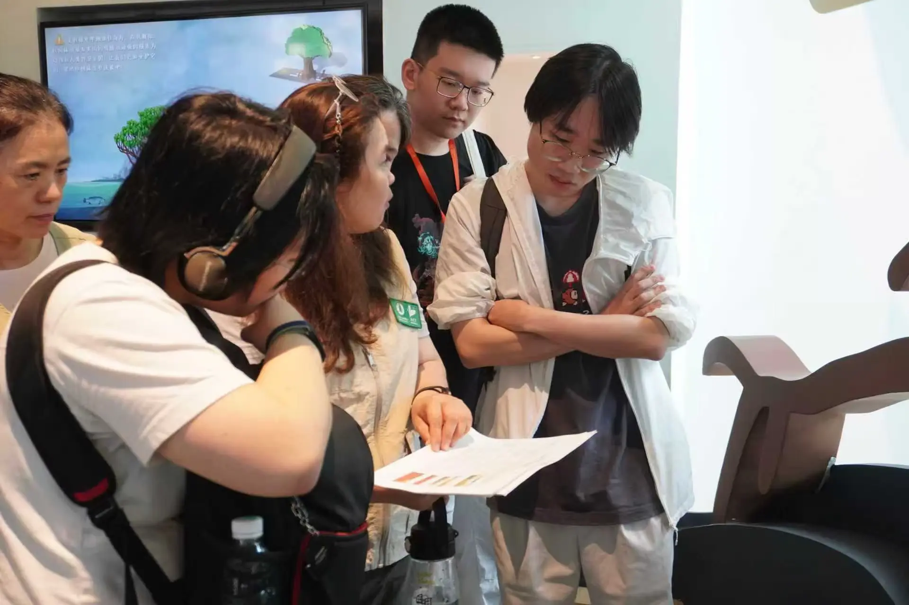
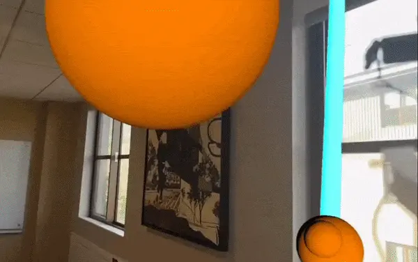
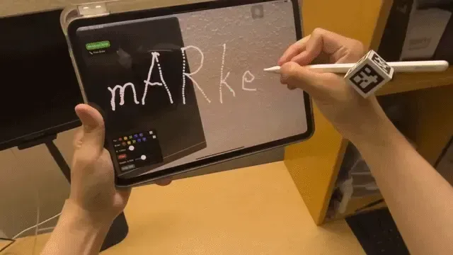
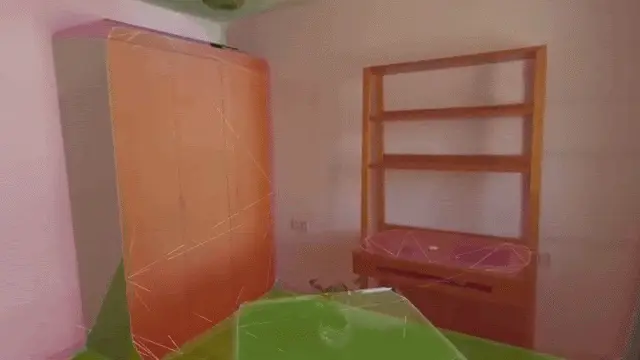
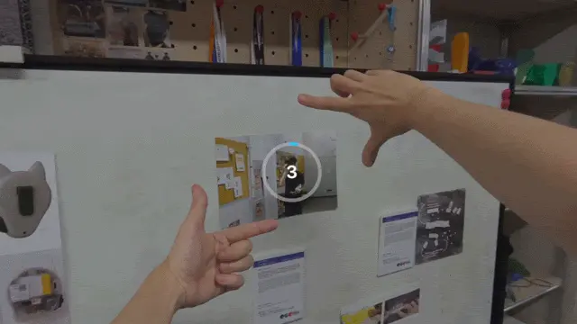
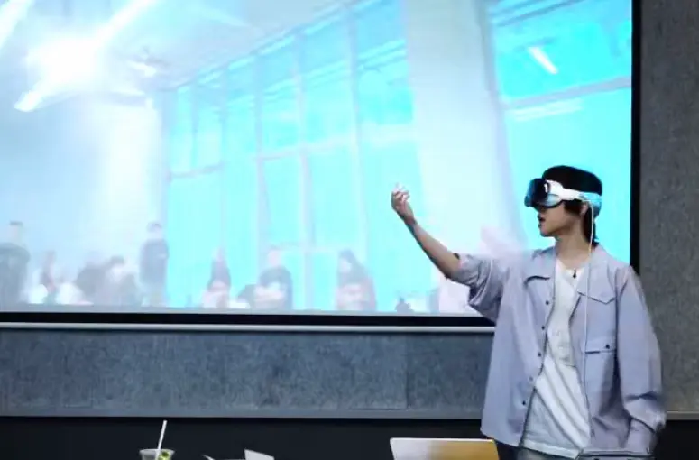
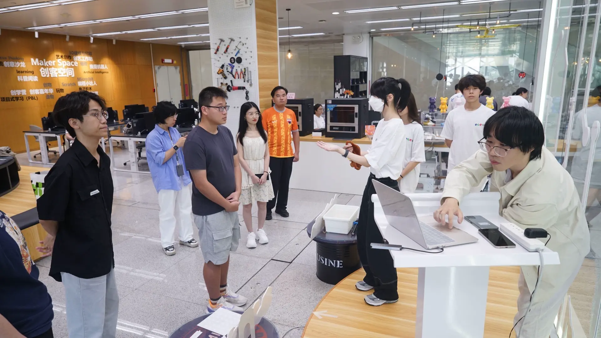
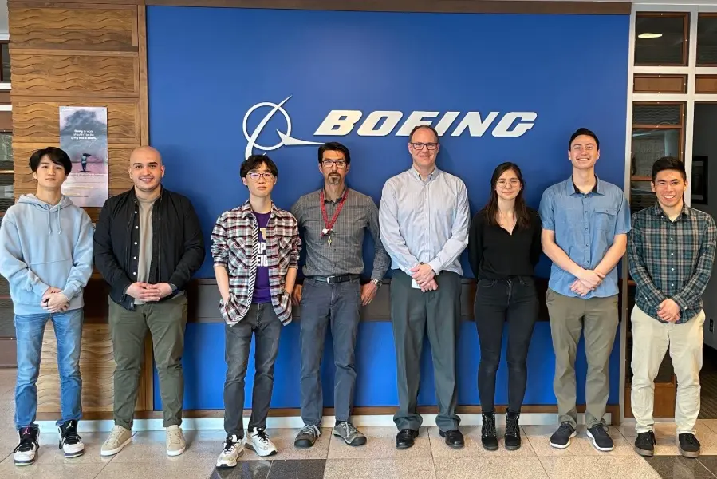

Fab City High School Challenge, Summer '26
2026





Rejoining the 3rd FCC HS · Addressing local biodiversity
2026

Outreach and presentation at the FAN event · Demonstrating spatial computing
2025

Attending the 1st annual event as an advisor · Presentation at Shenzhen Library
2024

UW CEE Capstone · Boeing-sponsored project
2022